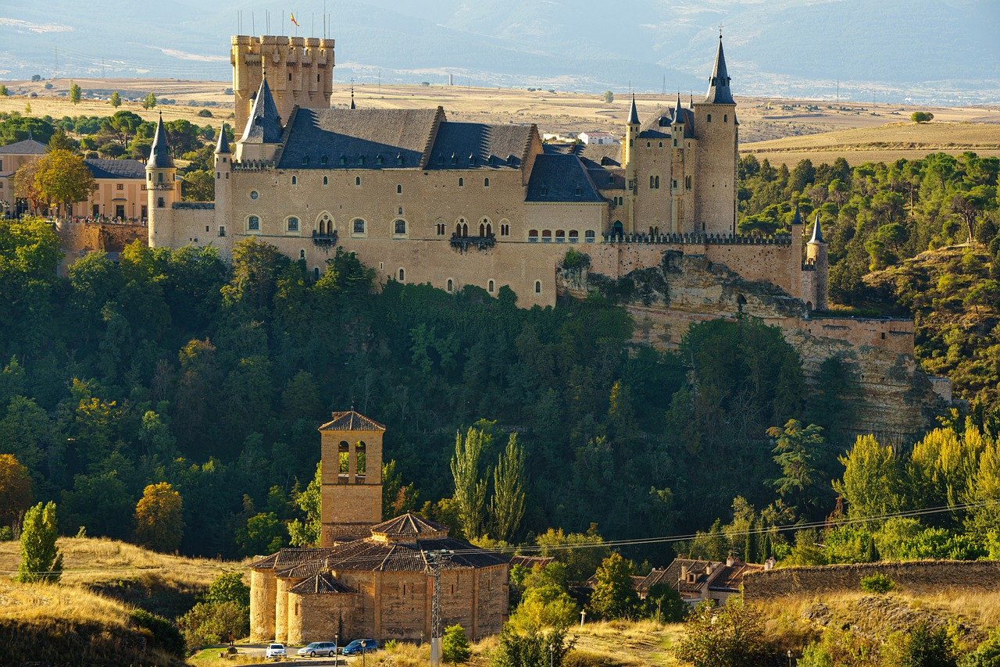

Castle Alcázar

The Alcazar of Segovia is a medieval castle located in the city of Segovia, in Castile and León, Spain. It has existed since at least the 12th century, and is one of the most renowned medieval castles globally and one of the most visited landmarks in Spain. It has been the backdrop for significant historical events and has been home to twenty-two kings, along with notable historical figures.
The Alcazar served both as a royal palace and a fortress for the Castilian monarchs, and its architecture reflects the grandeur and is a notable example of "power architecture": the impenetrable walls, the deep moat, its impressive towers like the Homage or Juan II's, and the strategic location symbolise power and authority. Furthermore, the luxury and opulence of its interior, with lavishly decorated rooms and coffered ceilings, were designed to awe and subdue visitors, reinforcing the authority of the Kings of Castile. Similarly, the legends and rumours surrounding the Alcazar of Segovia have played a significant role in its history.
Text by Wikipedia.
Barcelona

Barcelona is a city on the northeastern coast of Spain. It is the capital and largest city of the autonomous community of Catalonia, as well as the second-most populous municipality of Spain. With a population of 1.6 million within city limits, its urban area extends to numerous neighbouring municipalities within the province of Barcelona and is home to around 5.3 million people, making it the fifth most populous urban area of the European Union after Paris, the Ruhr area, Madrid and Milan. It is one of the largest metropolises on the Mediterranean Sea, located on the coast between the mouths of the rivers Llobregat and Besòs, bounded to the west by the Serra de Collserola mountain range.
Barcelona has a rich cultural heritage and is today an important cultural centre and a major tourist destination. Particularly renowned are the architectural works of Antoni Gaudí and Lluís Domènech i Montaner, which have been designated UNESCO World Heritage Sites. The city is home to two of the most prestigious universities in Spain: the University of Barcelona and Pompeu Fabra University. The headquarters of the Union for the Mediterranean are located in Barcelona. The city is known for hosting the 1992 Summer Olympics as well as world-class conferences and expositions. In addition, many international sport tournaments have been played here.
Barcelona is a major cultural, economic, and financial centre in southwestern Europe, as well as the main biotech hub in Spain. As a leading world city, Barcelona's influence in global socio-economic affairs qualifies it for global city status
Text by Wikipedia.
Valencia

Valencia is the capital of the province and autonomous community of the same name in Spain. It is the third-most populated municipality in the country, with 807,693 inhabitants (2023); 1,582,387 inhabitants live within the metropolitan area. It is located on the banks of the Turia, on the east coast of the Iberian Peninsula on the Mediterranean Sea.
The Port of Valencia is the 5th-busiest container port in Europe and the second busiest container port on the Mediterranean Sea. The city is ranked as a Gamma-level global city by the Globalization and World Cities Research Network. Its historic centre is one of the largest in Spain, spanning approximately 169 hectares. Due to its long history, Valencia has numerous celebrations and traditions, such as the Falles, which was declared a Fiesta of National Tourist Interest of Spain in 1965 and an intangible cultural heritage by UNESCO in November 2016. In 2022, the city was voted the world's top destination for expatriates, based on criteria such as quality of life and affordability. The city was selected as the European Capital of Sport 2011, the World Design Capital 2022 and the European Green Capital 2024.
Text by Wikipedia.